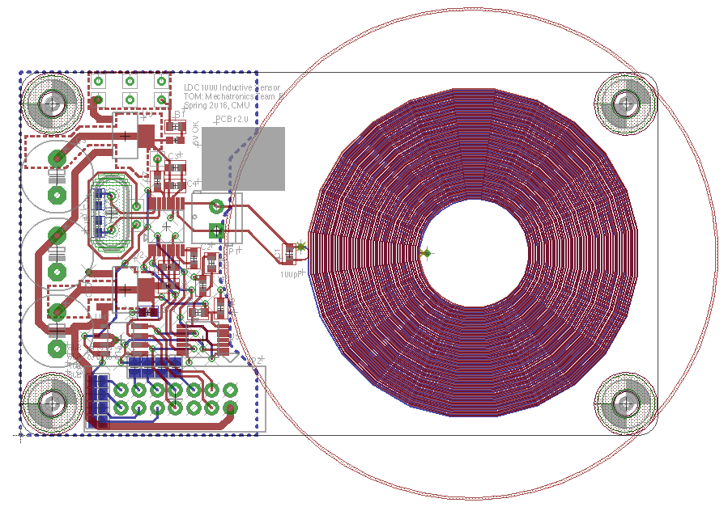
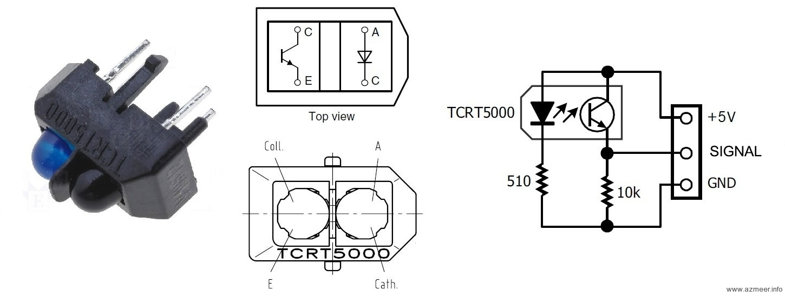
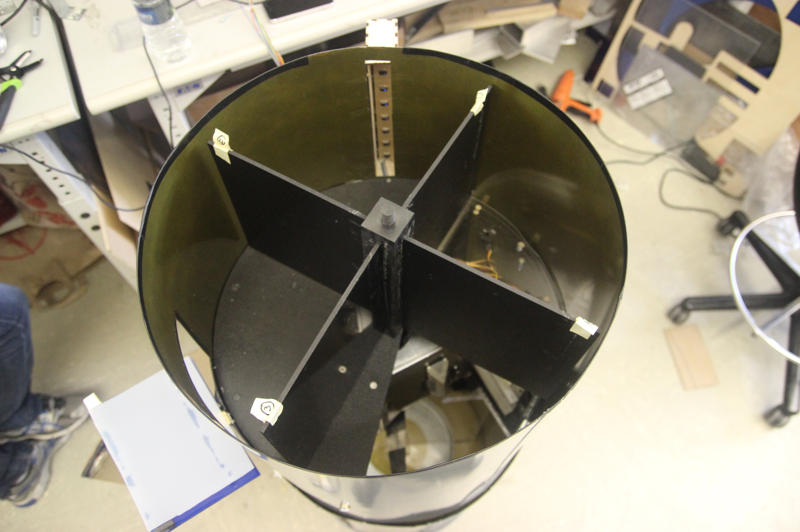
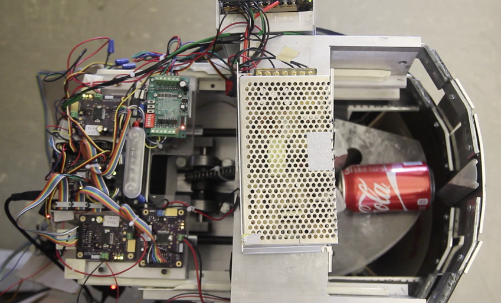
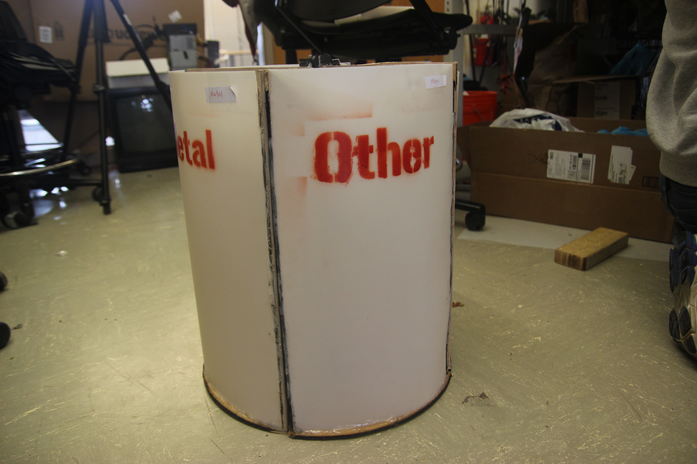

This page details our current progress thus far.
Electrical
SENSORS

INDUCTANCE | The inductive sensor bank is comprised of up to three individual sensor PCBs on a common SPI bus. Each PCB contains a 2” diameter double layer sense coil, an LDC1000-Q1 automotive qualified Inductance to Digital Converter IC, Power, ESD protection, and backdrive protection circuitry. In the final prototype, two sensors were installed, out of which one was used to detect metallic objects. The sensor output is related to the resistance seen by induced eddy currents in the target object, which varies with object shape, distance from coil, and material. Due to the high variability in trash items, the sorting algorithm only sorts items into metallic or non-metallic categories based on a fixed threshold.

OPTICAL | The optical sensor bank contains eight infrared emitter-phototransistor pairs that use 940nm light to determine the reflectivity of the object. The change in analog sensor output during the time when the object is exposed to the sensor is dependent on the reflectivity of the object. Transparent objects will show a smaller change in output than opaque objects. Black objects are an exception, since a black object will look transparent against the black paddles in the chimney.
MASS | The mass sensor was chosen to be the last sensor to ensure that the top plate would be normally flush with the rest of the bottom plate so that the paddles would not catch on the ledge and get stuck. The mass sensor bank uses four Hall Effect sensors and magnets to determine the distance between two parallel plates separated by springs. The individual sensors measure the magnetic flux from the magnet’s field, so the analog output changes based on the distance between plates, and consequently the force applied by the test object’s mass. Although not linear, the sensor is sensitive enough to differentiate plastic and styrofoam, yet has a wide enough range to detect heavy glass objects. Furthermore, the sensor is easily customizable by using different springs.
ENCODERS | In order to function, firmware was required to know the position of actuators. This was most critical for chimney and bins, compared to compacting and the trapdoor. One option was to use limit switches or optical sensors to detect when the actuator was at a specific position, however this limited the flexibility of selecting positions and required mounting of each sensor. Instead, we chose to use a rotary Hall Effect position sensor that outputs a voltage proportional to the angle of a diametrically polarized magnet relative to the sensor. Theoretically, this reduced the mechanical complexity of mounting the sensor and allowed for changing thresholds in software.
However, the encoder mounting holes were not machined precisely due to impracticalities of mounting the compactor frame in a milling machine, so they had to be mounted with epoxy and adjusted manually. Also, firmware had to check for overflow and account for noise.
FIRMWARE
For the firmware bring up, we first created state charts and set requirements for each controller before coding to ensure tracibility.
MISC
POWER | The system uses five power rails sourced from a 12V and a 24V AC-DC enclosed switching power supplies. The 24V rail powers the compacting motor. The 12V rail powers the chimney, bin, and sort motors, and is split into 3.3V, 5V, and 5.5V Analog rails for General logic power, 5V sensor interface power, and Encoder/Inductive sensor power. Multiple rails mitigate problems associated with noisy motors or logic on the same power rail as analog circuits.
UI | A detachable User Interface panel contains a mode switch, ESTOP switch, and status display. The mode switch allows the user to configure the system for ON mode, where trash items are accepted, SERVICE mode, where bins can be removed and emptied, and OFF mode, which is a standby state where electronics are powered, but actuators are disabled in software. The ESTOP switch can be used to disable actuators through hardware in case of a system malfunction. It does not power off the system, however, so the user or technician can check error codes through a USB port. The LCD screen shows the classification of trash input.
Mechanical
TOP
INPUT | Users place objects through the entry door. Once the door is closed, the object will begin moving through the sensors placed in the chimney when pushed by the paddles. After about one second, the next object can be placed. If the door is open, the next paddle will continue to move until it has reached the start of the door opening. This allows the machine to adhere to the 3 second feed rate requirement while maintaining operator safety, without adding an additional buffer mechanism.

Items put into the chimney used to get stuck in a number of places. The first place would be the edge of the input door cut out. The next was the edge of the optical sensor cut out. And finally, because the dimensions of the chimney was designed for top loading with the 9” direction vertical, large items could get stuck or spin full circle without falling through at the last quarter circle. The input door problem has been solved by adding a sheet of plastic to the door such that there is not a gap in the wall at the door cut out. The optical sensor problem was solved using clear packing tape to bridge the cut out while avoiding the areas directly in front of each sensor. The last problem was solved by placing large items perpendicular to the paddles rather than parallel to the paddle. To allow large items to be placed in any orientation, the diameter of the walls can be increased or there can be more paddles such that items forced in with the longest dimension vertical.
MIDDLE

COMPACTOR | The compactor is a slider-crank mechanism driven by a 24V DC gearmotor. The overall compactor was built from two pieces of aluminum u-channel; one piece was flipped upside-down and then welded to the other to form a box. The cranks and connecting rods were mounted to the base of this box; the ram, the guides for it to slide on, and the backing plate were mounted to the sides. Due to the size of the motor - 9” in length - along with the cylindrical shape of our machine, we mounted the motor towards the center of the machine, above the compacting mechanism. The slider-crank mechanism was hence chain-driven. Additionally, a tray and drawer slides were mounted to the inside of the aluminum box so that the PCBs could be mounted and conveniently tested. The 24V and 12V power supplies were also mounted in this space.
TRAPDOOR | Mounted underneath the compactor was an acrylic plate in the shape of a quarter-moon (Figure 11). This revolving plate was driven by a stepper motor mounted to the inside wall of the compactor, and acted as a trapdoor for items. An item falling through from the chimney would land on this trapdoor, where it would rest momentarily. If the item was to be compacted, the trapdoor would hold the item until compaction. Otherwise, it would recede, allowing the item to fall through the opening into the appropriate bin.
BOTTOM
BINS | Items were sorted into one of four bins by rotating all four bins until the appropriate bin was underneath the opening in the compactor. The bin assembly was chain-driven by a 12V DC gearmotor that was mounted in the middle section; the bins themselves were supported from the bottom by a Lazy Susan. The rotation of the bins was coordinated such that the appropriate bin was vertically under the opening in the compactor after the trapdoor receded, allowing the item to fall through into the bin.

Initially, the bin assembly rotation was unidirectional, however this method proved too slow. In order to increase speed, we implemented bidirectional rotation. Using this method, the appropriate bin would never be more than 180° away from the opening beneath the compactor - in the initial method, it was 270°. Another challenge with the bin implementation was that they would sometimes get caught on the door as the assembly was being rotated. As a simple remedy, we would a string across the opening to prevent the bins from escaping as they passed by the door.
STORAGE | These four quarter-cylinder containers sit on an acrylic plate mounted to a Lazy Susan turntable affixed to the bottom of the barrel. The bottom plate supports two acrylic sheets that divide the space in the bottom barrel into four sections, one for each container. An acrylic cross maintains the position of the dividing sheets and provides connections for an axle hub that is connected to a sprocket driven by a DC motor near the edge of the barrel. Magnets and a securing string on the outside of the barrel behind the bin door hold the containers tight while spinning.
{kind=link}
{kind=link}
{kind=link}
{kind=link}
{kind=link}